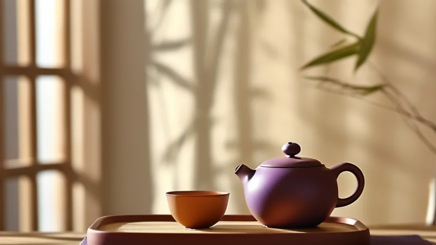
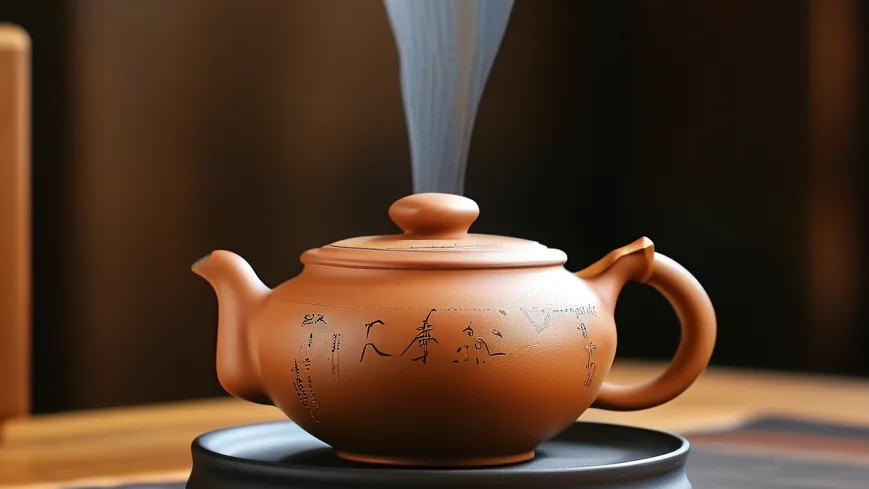
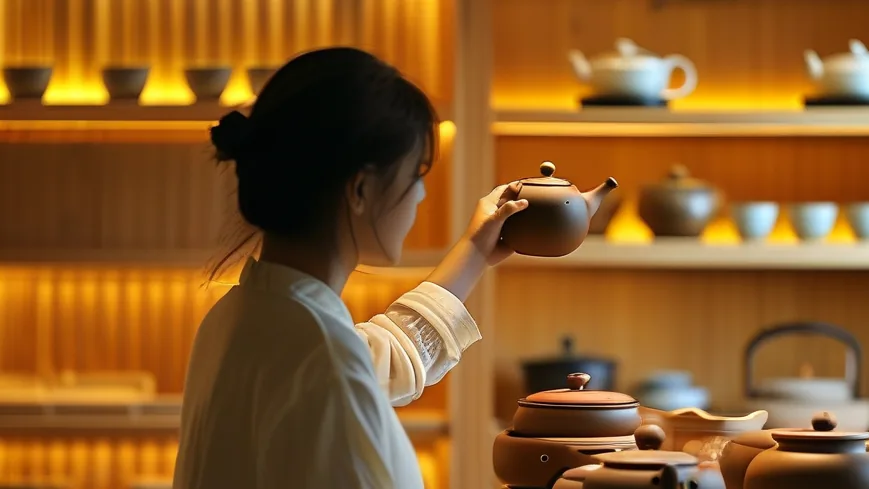
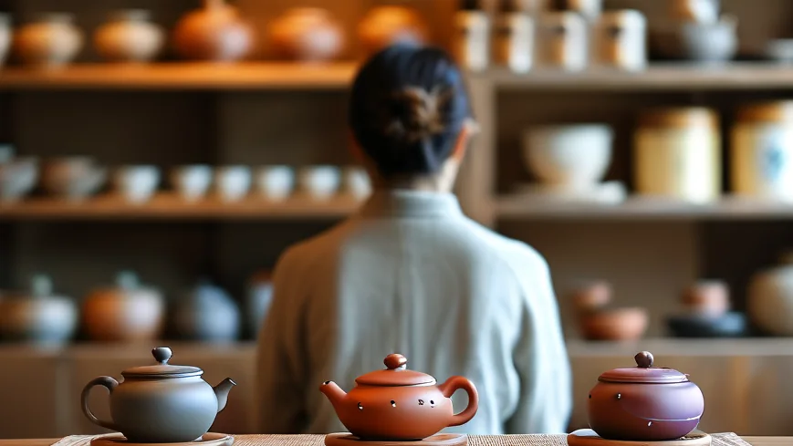
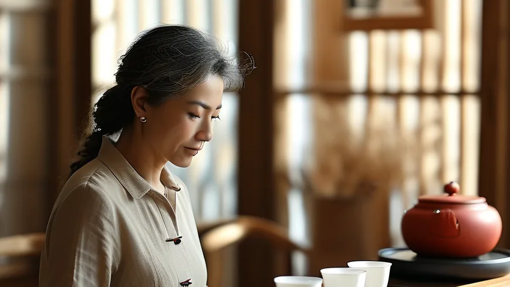

阿凤姐点评紫砂新闻：宜興非遺傳承人 親制——这是我在店里被问得最多的一件事。📌 茶壺手藝人 on Facebook: "🏆 宜興非遺傳承人 親制 —— 手工紫砂壺 以壺會友。——阿凤姐的看法很直接：**泥料是一把壶的底子，底子不行的，工艺再好也白搭。** 我把二十多年做凤凰单丛的经验，摊开讲给你听。
🌿 开篇问答
Q1：原矿、绝矿、稀有泥，这些说法值多少钱？
「泥料这事最容易被讲故事。原矿、绝矿、老泥、稀有泥，名词一个比一个唬人，可你上手一摸，砂感粗得扎手、颜色贼亮，那多半掺了料。」
Q2：想当面问、当面喝，去哪儿找阿凤姐？
来 阿凤姐茶叶店（惠州凤凰茶业），就在惠州东平东湖花园沿江商铺，导航搜索「凤凰茶业」即可。批发零售都做，可以先来喝一杯再定——详细地址、电话和营业时间见文末。
Q3：怎么一眼看出一泡茶的好坏？
阿凤姐教你三看：条索匀不匀、汤色透不透、叶底活不活。三样都过，才谈香气。
今天碰上的这件新鲜事
📌 茶壺手藝人 on Facebook: "🏆 宜興非遺傳承人 親制 —— 手工紫砂壺 以壺會友。——阿凤姐的看法很直接：泥料是一把壶的底子，底子不行的，工艺再好也白搭。

📰 泥料上出了新说法
2026-11-23 ｜ 茶壺手藝人 on Facebook: "🏆 宜興非遺傳承人 親制 —— 手工紫砂壺 以壺會友，歡迎交個朋友！🤝 我們深知，一把好壺的背後，是幾十年如一日的堅守。
茶壺手藝人 on Facebook: "🏆 宜興非遺傳承人 親制 —— 手工紫砂壺 以壺會友，歡迎交個朋友！🤝 我們深知，一把好壺的背後，是幾十年如一日的堅守。 由【宜興非遺傳承人】親自把關、純手工製作。從原礦泥料的甄選，到一拍拍打出身筒的…" 🏆 宜興非遺傳承人 親制 —— 手工紫砂壺 以壺會友，歡迎交個朋友！🤝 我們深知，一把好壺的背後，是幾十年如一日的堅守。 由【宜興非遺傳承人】親自把關、純手工製作。
来源：https://www.facebook.com/61550272621165/posts/-%E5%AE%9C%E8%88%88%E9%9D%9E%E9%81%BA%E5%82%B3%E6%89%BF%E4%BA%BA-%E8%A6%AA%E5%88%B6-%E6%89%8B%E5%B7%A5%E7%B4%AB%E7%A0%82%E5%A3%BA%E4%BB%A5%E5%A3%BA%E6%9C%83%E5%8F%8B%E6%AD%A1%E8%BF%8E%E4%BA%A4%E5%80%8B%E6%9C%8B%E5%8F%8B%E6%88%91%E5%80%91%E6%B7%B1%E7%9F%A5%E4%B8%80%E6%8A%8A%E5%A5%BD%E5%A3%BA%E7%9A%84%E8%83%8C%E5%BE%8C%E6%98%AF%E5%B9%BE%E5%8D%81%E5%B9%B4%E5%A6%82%E4%B8%80%E6%97%A5%E7%9A%84%E5%A0%85%E5%AE%88%E7%94%B1%E5%AE%9C%E8%88%88%E9%9D%9E%E9%81%BA%E5%82%B3%E6%89%BF%E4%BA%BA%E8%A6%AA%E8%87%AA%E6%8A%8A%E9%97%9C%E7%B4%94%E6%89%8B%E5%B7%A5%E8%A3%BD%E4%BD%9C%E5%BE%9E%E5%8E%9F%E7%A4%A6%E6%B3%A5%E6%96%99%E7%9A%84%E7%94%84%E9%81%B8%E5%88%B0%E4%B8%80%E6%8B%8D%E6%8B%8D%E6%89%93%E5%87%BA%E8%BA%AB/122360416412009087

💬 泥料的事，得掰开揉碎说
阿凤姐把这条消息读了两遍，指着其中一句说：「# 茶壺手藝人 on Facebook: "🏆 宜興非遺傳承人 親制 —— 手工紫砂壺 以壺會友，歡迎交個朋友！」——这句她认。
「我判断泥料只有三步：看颜色是否沉闷自然、摸砂感是否细而不滑、热水淋一遍闻有没有异味。三步都过，才谈得上是不是好泥。」
「别迷信稀有。紫泥最稳、容错最高，日常泡什么茶都不挑；朱泥聚香但怕惊裂；段泥好看但怕混泡。适合自己的，比稀有的强。」
「泥料这事最容易被讲故事。原矿、绝矿、老泥、稀有泥，名词一个比一个唬人，可你上手一摸，砂感粗得扎手、颜色贼亮，那多半掺了料。」
她说自己的标准很土：「泥料要经得起热水一淋。淋一圈没异味、颜色不发贼光，再谈是不是好泥。」

🔍 顺带说清：西施壶为什么叫西施
壶身圆润、短嘴短把，整体像一位抱壶的女子，所以叫西施。它是紫砂里最经典的小容量器型之一，一手能握，出水快。
「为什么老茶客第一把壶常选它——这话我讲了二十多年。」阿凤姐说，挑西施看壶嘴，短而微翘最好用；壶把要贴手，握着虎口不空。

🔍 另一个常被问的：石瓢壶的三角骨架
石瓢上小下大、桥钮直嘴，重心低，看着拙其实稳。壶身近梯形，出汤利落，泡单丛这种高香茶不容易闷。
「很多人把它想复杂了。」她说，石瓢要挑重心低的，装满水也不头重脚轻；桥钮要正，倒水时壶盖不晃。
✅ 泥料说法满天飞，认这四条就够
一、紫泥打底最省心。 日常泡单丛、乌龙、红茶都合适，容错高、不易出错，新手第一把壶选它不会后悔。
二、朱泥小壶聚香。 100-150ml 最适合一人独饮；冬天务必先温水淋壶，骤冷骤热容易惊裂。
三、段泥一壶一茶。 段泥显茶渍、怕串味，喝完立刻冲洗擦干，不然半年就花得难看。
四、热水淋闻味道。 新壶用热水淋一圈，若有刺鼻味或酸味，说明掺了化工料，再好听的说法也别买。
🍵 店里能做什么：凤凰单丛全系列、紫砂壶现场试泡；带自己的茶来，免费帮你试壶、看壶、教你怎么养。

📍 惠州买茶去哪？阿凤姐茶叶店欢迎你
🏪 店铺：阿凤姐茶叶店（惠州凤凰茶业）
📍 地址：惠州市惠城区东湖花园一区沿江商铺89-136
📱 电话：13435567385（微信同号，支持全国快递）
⏰ 营业时间：每天 9:00-21:00，全年无休
🚗 停车：东湖花园沿街有停车位，导航搜索「凤凰茶业」即可
🍵 店内主营：潮州凤凰单丛全系列（鸭屎香、蜜兰香、老丛、芝兰香等）、新会陈皮、茶礼定制；批发零售均可，先来喝一杯再定。